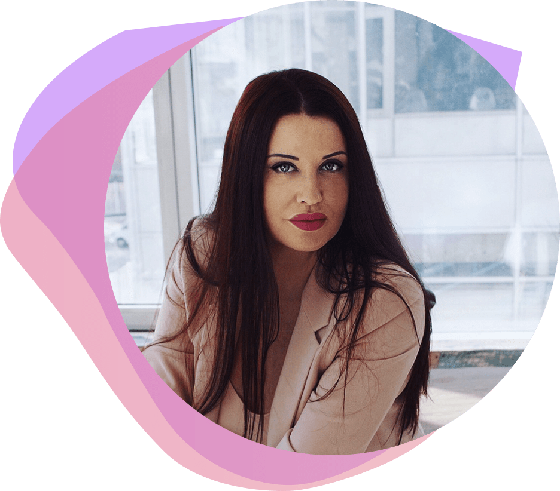

Что важно делать для того, чтобы обрести вторую
Бесплатныйонлайн тренинг-практикум по выстраиванию качественных отношений
Ожидания, возлагаемые на партнера, и реальные отношения с ним всегда кардинально противоположны
Испытываете кризис в отношениях, грозящий перерасти в окончательный разрыв
Сомневаетесь в своем партнере и не можете принять решение - ваш это “вариант” или не стоит тратить время “впустую”
Постоянно наступаете на одни и те же грабли в отношениях и ходите по кругу, не имея возможности обрести счастье
Давно нет отношений и боитесь вступать в новые, опасаясь повторения горького опыта, но мечтаете о счастье и гармонии
Семейная лодка разбилась о рифы быта, и вы тщетно пытаетесь кинуть друг другу спасательный круг - то недолет, то перелет…
Как формируются людские типажи, формировании судьбы, относительно типажа
Истинные причины, мешающие семейному счастью
По каким критериям мы выбираем вторую половинку, но потом именно в этих критериях и разочаровываемся
Стоит ли уходить от партнера или может стоить потерпеть, изменится ли судьба при смене партнера
Как быть второй половинкой, которую в паре уважают, с которой считаются
По судьбе или по карме с вами ваш партнер, что вас с ним ждет в будущем